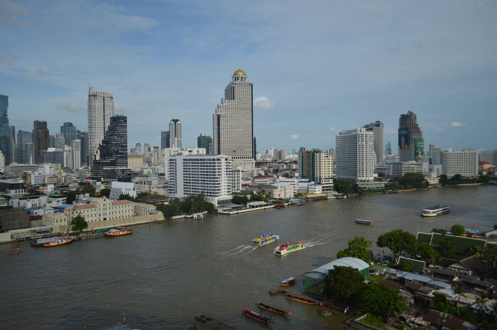

Flood overview
Stay informed. Stay prepared. Stay safe.

Central Thailand
Bangkok
Bangkok and the Chao Phraya River basin
A clearer view of the water around you.
Road flooding across Bangkok
Deepest road reading in each of the 50 districts
Chao Phraya River
Bangkok Bridge station